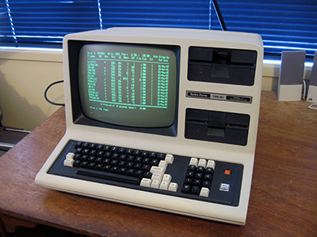
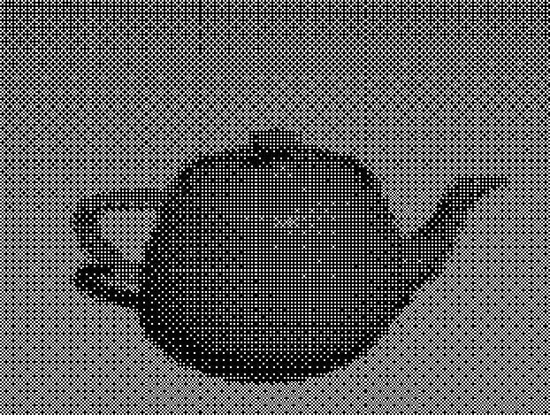
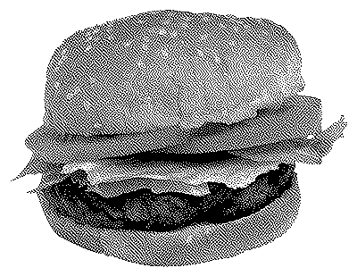
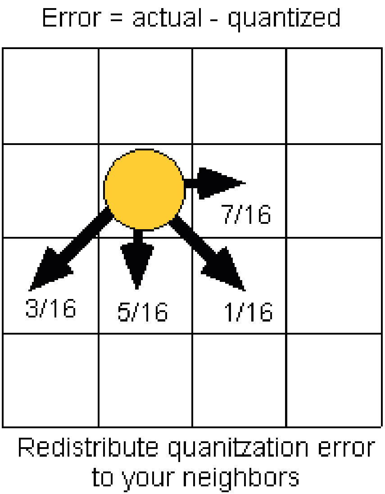
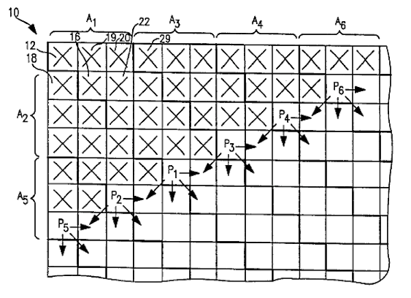

How does this tool work?
& What is dithering?
This is a dither and zoom machine.
Upload an image and go through their 1-bit translation.
Your new hobby will be observing error diffusion patterns.
This organised pixel chaos is formed by Bill Atkinsons dither algorithm.
first:
Upload one or more images.
They will appear on the fabric-canvas, the left canvas.
second:
Drag, rotate, skew, scalee your image by
dragging the blue hendles. REMOVE with backspace.
COPY with c. PASTE with p.
after:
CLICK (don't drag) on shapes and move
them over your images.
next:
ZOOM with your mouse on the dither-canvas
and explore the 1-bit translation of your image.
DOUBLE CLICK on the dither-canvas to start over.
then:
You are adjusting values in Atkinsons dither algorithm
when you slide these sliders.
last:
Save your image as a PNG.
Mail your results to: cato.speltincx@telenet.be
What is dithering?
Computers used to have 1-bit displays. In reference to
images ‘bits’ refer to the number of tonal variation
of a color. This means there were only two color options
for a pixel. Grey-scaled images couldn’t be displayed.

Dither algorithms are a solution for this problem.
This code create an illusion of grey-scales.

There are various types of dithering. Some create ordered patterns, others create disordered patterns. I’m the most interested in the second type because
it acts more unpredictable.


It's called error diffusion dithering. This algorithms
looks at each pixel of the image in sequence.
Pixels more than 50% black become black and pixels
with more than 50% white become white.


The interesting part is the error in this code, which makes the patterns unpredictable. The error distributes the difference of the final (1-bit) pixel’s value and the original value to the neighbour pixels. What the algorithm does at one location influences what happens at other locations.
I understood this technical part of dithering thanks to
the following sites. I used parts of their explanation
for this text.
© Cato Speltincx